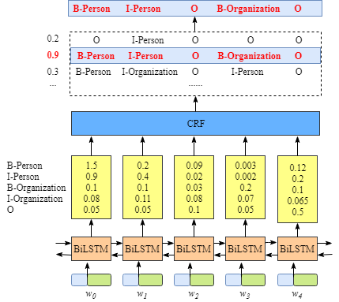
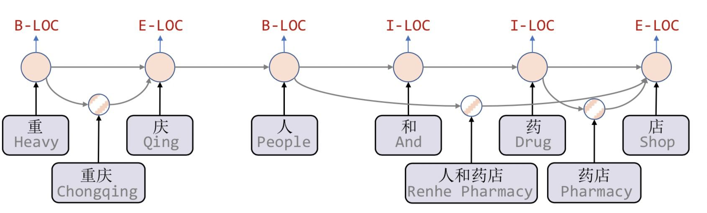
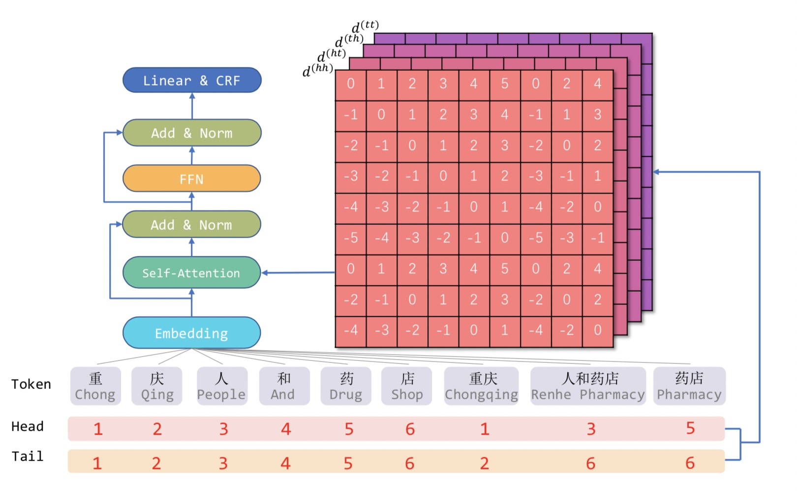

NER概述
命名实体识别（Named Entity Recognition，简称NER），是指识别文本中具有特定意义的实体，主要包括人名、地名、机构名、专有名词等，一般的也可以识别特定类型的、人为规定的实体。NER是信息提取、问答系统、句法分析、机器翻译等领域的重要基础工具，在自然语言处理走向落地应用过程中占有重要的地位。
例如，我们可以使用命名实体识别技术抽取出病历单上的病人姓名、年龄、性别、患病部位、问诊时间、科室、诊断结果、检查结果等等。提取这些信息之后，我们可以将这些关键信息存储至结构化数据库，或者利用这些信息构建病人的病历肖像，也可以用这些信息生成只是图谱等。
又例如，有很多合同比如基金合同，我们需要提取合同中的关键信息显示在公告网站上，如基金管理人，基金名称，基金申购赎回时间，基金申购和赎回费率等。这时可以利用命名实体识别直接提取出这些信息。
从上面的例子来看，命名实体识别技术可以提取出关键信息，这是数据电子化之后的重要一步，也可以作为后续自然语言处理技术的基础。
NER数据与评估
数据与标注
NER任务的基本方法当成一个序列标注（序列分类）任务，简单来说就是把一个句子序列中的每一个字都预测出一个标签，然后从这些标签中提取出实体。
举个例子：
上海是一座美丽的城市
B_LOC I_LOC O O O O O O O O
每个字都预测出一个类别，然后把字的类别组合成实体。比如“上”的标签为“B_LOC”，“海”的标签为“I_LOC”，“上海”两个字的标签组合为“LOC”，即location位置。
一般来说，不同的NER任务会有不同的类别，但都基本基于以下两种：
- BIO：B-begin，I-inside，O-outside
- BIESO：B-begin，I-inside，O-outside，E-end，S-single 或者BMESO，M类似于I
这里主要介绍BIO标注方法。BIO标注方法，就是给句子中的每一个字都标注一个标签，这个标签由两部分组成：一部分是该单词所属实体的位置，其中B表示该单词是实体的第一个单词，I表示该单词是实体的中间单词，O表示不是实体；另一部分是该单词对应的实体类型。因此，最终每个单词都被标注为BIO+实体类型的形式，这就变成了一个文本序列分类任务。
绝大部分的公开数据集也是按照这个方法标注的，常见的数据集参考这个。
还存在一种标注方式：
{
“Text”: “上海是一个美丽的城市。”,
“entity”: [(1,2, “LOC”)]
}
即用一个字典表示实体的位置和类别，很多阅读理解和关系抽取使用这种方式标注。
评估方法
命名实体识别模型的评估方式分为两种，一是通用的基于token标签进行直接评估，即评估每一个字的标签。二是将字的结果生成实体的标签之后再评估。后者的评测方法比较严格，也会考虑到字标签生成实体标签的方法的效果。
举个例子：
原始序列：上海是一座美丽的城市
原始标签：B_LOC I_LOC O O O O O O O O
预测结果：B_LOC I_LOC I_LOC O O O O O O O
按照第一个评估方法，实体（非“O”）标签的召回率=1，精确率=2/3。
而按照第二个方法，需要先将字预测标签生成实体标签，这里以“B_LOC”作为实体开始，最后一个遇到“O”的“I_LOC”作为实体结束，则原始标签实体为“上海”，预测实体为“上海是”，那么实体的召回率为0，精确率也为0。
很显然的，第二种方法很严格，只有最终生成的实体结果完全正确才能算作抽取出正样本，而不是仅仅字级别标签分类正确就可以了。
这时，细心的读者会考虑到，将字预测标签变成实体标签这一步属于人为生成的算法，而不是模型的一部分，并且这一部分也会较大的影响最终结果。
例如：
原始序列：上海是一座美丽的城市
原始标签：B_LOC I_LOC O O O O O O O O
预测结果：I_LOC I_LOC O O O O O O O O
在从单个字符的预测结果转换成实体结果的时候，如果我们认为孤立的，没有B作为开头的”I_LOC”都是错误的预测，那么预测出的“I_LOC I_LOC”不会生成实体。如果我们认为句子开头的“I_LOC”可以人为修改成“B_LOC”，那么就可以生成出实体，从而正确预测。
一般来说，我们会把从单个字符预测结果转换成为实体的过程叫做后处理，正确的后处理有时可以很大程度上提高整体的预测效果。
NER算法
大部分的NER算法是将NER任务当作一个序列标注任务来处理，预测出每一个字符的标签。
lstm+CRF
《Bidirectional LSTM-CRF Models for Sequence Tagging》是百度2015年发表的论文，论文将LSTM和CRF这两种方法结合，实现序列标注任务。

- 输入为字符的销量表示，先经过LSTM层，这里可以将字符的向量表示进行融合，LSTM层输出的结果为类别的预测结果，也称为发射概率P（黄色框部分）。
LSTM layer的输出维度是类别大小，设Bi-LSTM的输出矩阵为P，其中$P(i, j)$代表字符$w_i$映射到$tag_j$的非归一化概率。
例如上图的 $w_0, w_1, w_2, w_3, w_4$ 经过LSTM的预测结果分别为 $B-Person, I-Person, O, B-Organization, O$。
- 将发射概率送入CRF，CRF中存在一个转移矩阵A，表示每一类标签转移到下一类标签的概率, 即$A(i,j)$表示$tag_i$到$tag_i$的转移概率。例如上图中，存在 $B-Person, I-Person, B-Organization,I-Organization, O$ 共5个类别，则加上开头和结尾，转移矩阵大小为$7*7$。
对于整个序列$X$的输出$y$, 整个序列的分数
实际上，在第一步的时候已经获取到每一个字符的预测结果了，但是CRF保证了序列中字符预测结果的可靠性。
例如，
真实标签：B I O B I
LSTM的预测结果：B I O I I
这种预测结果是不符合实际情况的，因为标签 I 的前面一个标签不可能是 I 。这表明序列的标签顺序存在一种约束关系，这是LSTM没办法学到的。
CRF将序列长度为N，类别数为K的序列的预测方式从N个K分类任务转换成一个$K^N$分类任务，从而可以剔除掉一些不符合实际情况的序列预测结果。随之而来的代价就是复杂度提高，解码速度慢。
预训练模型
随着这些年预训练模型越来越强大，基本上绝大部分任务的编码阶段都使用预训练模型完成了，序列标注任务也不例外。
使用Bert之类的预训练模型+LSTM+CRF可以大幅度提高模型效果，甚至于实践证明，如果抛弃LSTM和CRF，仅仅使用softmax作为解码器，仍然可以取得不错的效果，并且大幅度提升速度。
词汇增强
根据论文《Is Word Segmentation Necessary for Deep Learning of Chinese Representations?》中的结论，一般来说，中文字向量的效果要强于词向量，并且一般中文预训练模型会生成字向量而不是词向量。而根据常识，在中文中，语义大部分以词汇的形式表示，同一个字在不同词语中的含义可能不同，所以引入词汇信息或许可以对字向量做一些补充，这一方法在一些特定领域会比较有效。
Lattice LSTM
Lattice LSTM：Chinese NER Using Lattice LSTM（ACL2018）算是词汇增强方法的中文NER的开篇之作。

这篇论文提出了一种lattice结构，它是一个有向无环图，由词汇的开始和结束决定这个无环图的位置。对于当前的字符，融合以该字符结束的所有word信息，如对于「店」融合了「人和药店」和「药店」的信息。
但是这种结构也存在一些缺点：
- 计算性能低下，不能batch并行化。因为在不同序列中字符之间的增加word cell数目不一致，每一个序列都要生成单独的lattice结构；
- 信息损失：每个字符只能获取以它为结尾的词汇信息，对于其之前的词汇信息也没有持续记忆。如对于「药」，并无法获得‘inside’的「人和药店」信息；
- 可迁移性差：只适配于LSTM，不具备向其他网络迁移的特性。
FLAT
FLAT: Chinese NER Using Flat-Lattice Transformer（ACL2020）适用于Transformer网络结构，设计了一种巧妙position encoding来融合Lattice 结构：

- 将原始序列（设序列字向量个数为N）分词，并将分词之后的词向量（设词向量个数为n）拼接到字向量之后，则新序列向量总长度为N+n；
根据字和词汇的位置生成k种（论文中为4种）相对位置矩阵，大小为 $(N+n)*(N+n)*k$；
将相对位置矩阵重新编码之后融合到新序列向量的attention中，生成一个新的attention score。
这样就可以将词汇的向量信息和相对位置信息融合到Transformer网络结构，并且这种方式可以安排在预训练模型之后，这样就可以同时有效利用预训练模型。